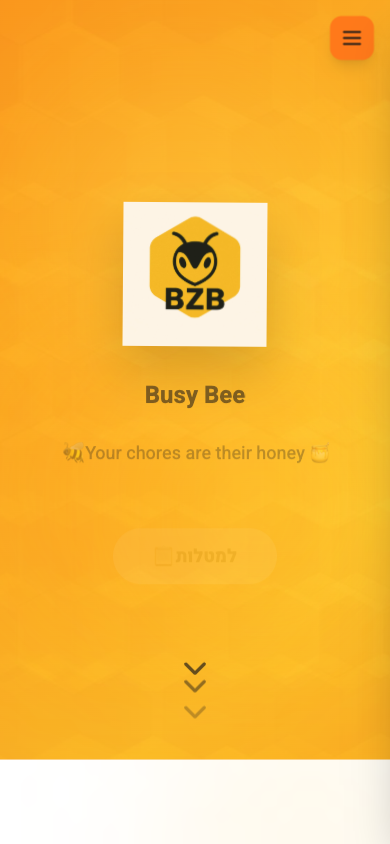
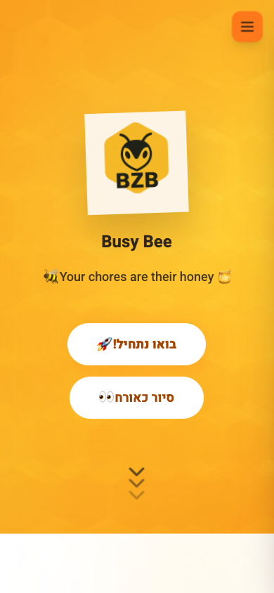
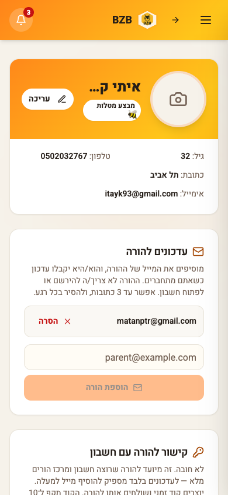
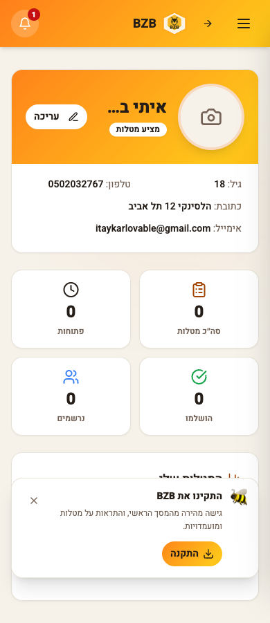

דוח בדיקת UI/UX במובייל — BusyBee
רוחב בדיקה: 390px. כל צילום לאחר המתנה של 8 שניות. צילום “לפני” מוצג רק אם קיים צילום אמיתי.
לפני — דף הבית

אחרי — דף הבית

לפני — פרופיל

אחרי — פרופיל

לפני — ניהול
אין צילום לפני אמיתי